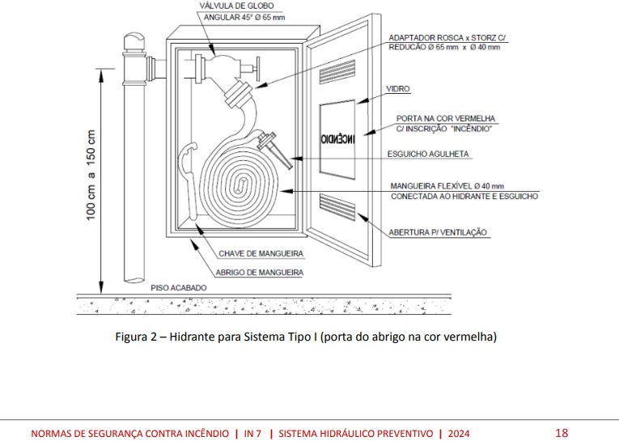
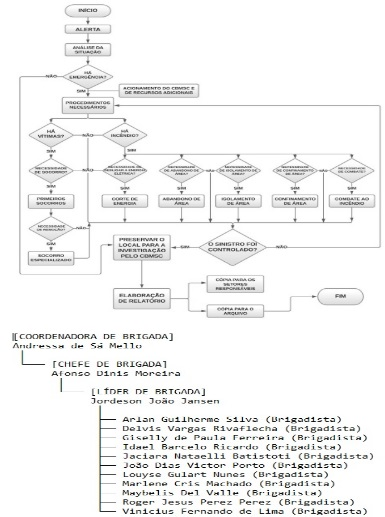

Bandeira: KOMPRÃO. Loja: 105. São José/SC
Inauguração: 19/06/2026
Gerente Loja 105 KOMPRÃO: Laudemir Junior
Téc. de Segurança do Trabalho: Marcelo Picanço de Farias
Contato: (48) 99969-6483


Relatório de Inspeção de Hidrantes ...Enviar em PDF o relatório de inspeção para: marcelo.farias@grupokochsa.com.br
TELEFONES DE EMERGÊNCIAS
SAMU: 192 - BOMBEIROS: 193 - POLÍCIA MILITAR:190 - DEFESA CIVIL: 199
HOSPITAL REGIONAL DE SÃO JOSE/SC - Endereço: R. Adolfo Donato da Silva, s/n - Praia Comprida, São José - SC, 88103-901
POLICLINICA MUNICIPAL DE BARREIROS - Endereço: Rua Antônio Basílio Schroeder, S/N Barreiros, São JoséSC.